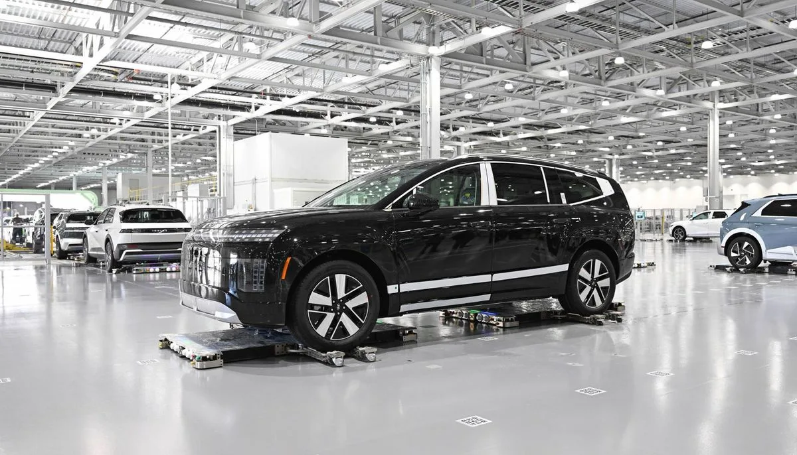

▲ 8월 21일 울산·전주·아산 공장 라인이 8시간 동안 멈췄다 ⓒ Wikimedia Commons
현대차 노조가 파업권을 확보했다는 소식은 지난달에 이미 전해졌습니다.
8월 21일, 그 권한이 실제로 쓰였습니다.
10년 만의 전면 파업입니다. 그리고 이번 협상 테이블에는 예전에 없던 항목이 하나 올라와 있습니다. 로봇입니다.
1. 8월 21일에 벌어진 일
| 항목 | 내용 |
|---|---|
| 형태 | 8시간 전면 파업 — 10년 만 |
| 참여 인원 | 조합원 약 3만 9,000명 |
| 영향 공장 | 울산 · 전주 · 아산 생산라인 중단 |
'10년 만'이라는 수식이 붙는 이유가 있습니다. 현대차 노사는 부분 파업이나 특근 거부 같은 방식으로 압박하는 경우가 많았습니다. 전 조합원이 동시에 라인을 세우는 방식은 그만큼 드물었습니다.
2. 누적 60시간이 만든 숫자
이번 8시간만의 손실이 아닙니다. 올해 교섭 과정에서 쌓인 누적 파업 시간이 60시간에 이릅니다.
| 구분 | 규모 |
|---|---|
| 누적 파업 시간 | 60시간 |
| 생산 차질 | 약 5만 5,200대 |
| 매출 손실 | 2조 3,000억 원 이상 |
📍 이 숫자의 성격
생산 차질과 매출 손실은 업계 추산치입니다. 회사가 공식 확정한 실적 수치가 아닙니다. 파업으로 못 만든 물량 중 일부는 이후 특근으로 회복되기 때문에, 최종 손실은 달라질 수 있습니다.
다만 소비자 입장에서 체감되는 부분은 따로 있습니다. 출고 대기입니다. 인기 차종은 이미 대기가 긴 상황이라, 생산 차질이 그대로 인도 지연으로 이어집니다.
이와 관련해 앞서 다룬 내용은 현대차 노조 파업권 확보와 그랜저·아반떼 출고 영향 기사에서 정리한 바 있습니다.
3. 진짜 쟁점 — 임금이 아니라 2028년
요구안 목록은 익숙합니다. 임금·상여금 인상, 해고 조합원 복직, 정년 연장입니다.
그런데 이번에 무게가 실린 항목은 따로 있습니다. AI와 자동화 기술 도입에 따른 고용 안정입니다.
| 항목 | 성격 |
|---|---|
| 임금·상여금 인상 | 매년 반복되는 항목 |
| 해고 조합원 복직 | 과거 사안 정리 |
| 정년 연장 | 고령화 대응 |
| 자동화 고용 안정 | 이번 교섭의 새 축 |
정년 연장과 자동화는 사실 하나의 문제입니다. 더 오래 일하겠다는 요구와, 그 일자리가 로봇으로 대체될 수 있다는 우려가 같은 방향을 보고 있기 때문입니다.
4. 아틀라스는 무엇을 하게 되나
현대차는 2028년부터 보스턴다이내믹스의 휴머노이드 로봇 아틀라스를 생산 현장에 단계적으로 도입할 계획입니다.

▲ 보스턴다이내믹스 아틀라스. 현대차그룹이 인수한 로봇 기업의 대표 모델이다 ⓒ Damian B Oh / Wikimedia Commons (CC BY-SA 4.0)
| 단계 | 담당 업무 |
|---|---|
| 초기 | 부품 배열 — 자재를 순서대로 놓는 작업 |
| 이후 | 조립 공정으로 확대 |
노조가 민감하게 보는 것은 두 번째 줄입니다. 부품 배열은 보조 업무에 가깝습니다. 그러나 조립 공정은 생산직 일자리의 중심입니다.

▲ 전시장에서는 미래 기술이지만, 공장에서는 고용 문제가 된다 ⓒ Damian B Oh / Wikimedia Commons (CC BY-SA 4.0)
5. 해외는 이 파업을 어떻게 봤나
미국 자동차 매체 카스쿱스는 이번 사안을 "사람과 로봇의 일자리 갈등"이라는 틀로 다뤘습니다.
같은 매체는 별도 기사에서 공장 휴머노이드 로봇의 현재 수준을 짚으며, 아직은 사람이 더 빠르다는 결론을 냈습니다. 걷고 말하는 로봇이 현장에 등장했지만, 실제 작업 속도에서는 인간을 따라잡지 못했다는 것입니다.
📍 두 이야기가 만나는 지점
지금 당장 로봇이 사람을 대체할 수준은 아니라는 평가와, 2028년부터 도입이 시작된다는 계획은 모순되지 않습니다. 노조가 요구하는 것은 '지금 대체된다'가 아니라 '대체될 때의 규칙을 지금 정하자'에 가깝습니다.
해외 언론에서는 다른 각도의 우려도 나왔습니다. 한국 자동차 산업의 생산 안정성에 대한 것입니다. 관세와 공급망 문제가 겹친 시기에 반복되는 대규모 파업은 해외 고객사와 투자자에게 변수로 읽힙니다.

▲ 현대차그룹은 주차 로봇 등 다른 영역에서도 로보틱스 적용을 넓히고 있다 ⓒ 현대차그룹
6. 앞으로 남은 것
✅ 지켜봐야 할 4가지
· 자동화 조항의 문구 — 도입 자체를 막을 수는 없습니다. 관건은 사전 협의 의무가 들어가느냐입니다
· 정년 연장 — 자동화 일정과 맞물려 계산되는 항목입니다
· 출고 대기 — 인기 차종 인도 지연이 실제로 얼마나 길어지는지
· 2028년 — 아틀라스 도입 시작 시점까지 남은 시간은 약 2년입니다
첫 번째 항목이 이번 교섭의 실질적인 승부처입니다. 임금은 숫자로 합의하면 끝나지만, 자동화 조항은 향후 10년의 고용 구조를 결정하기 때문입니다.

▲ 로보틱스는 현대차그룹이 가장 빠르게 넓히는 영역 중 하나다 ⓒ 현대차그룹
7. 정리
현대차 노조가 8월 21일 10년 만에 8시간 전면 파업을 단행했습니다. 조합원 약 3만 9,000명이 참여해 울산·전주·아산 라인이 멈췄습니다.
누적 파업 60시간, 생산 차질 약 5만 5,200대, 매출 손실 2조 3,000억 원 이상으로 업계는 추산합니다. 다만 이는 공식 확정치가 아닙니다.
이번 교섭의 새 축은 자동화입니다. 현대차는 2028년부터 보스턴다이내믹스 아틀라스를 부품 배열부터 도입해 조립 공정으로 넓힐 계획입니다. 임금이 아니라 이 조항의 문구가 실제 쟁점입니다.